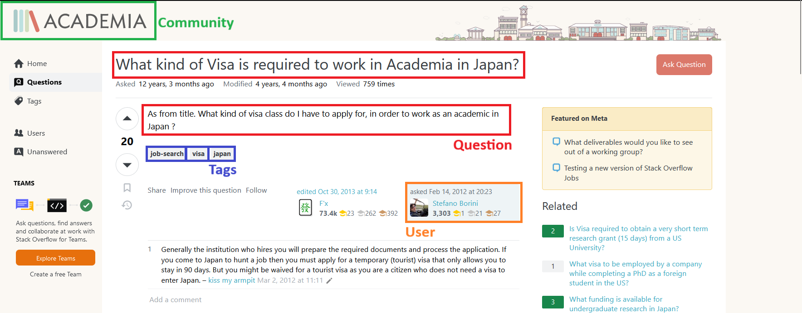

The goal of the PIR-FIRE Lab is:
The PIR-FIRE use data from StackExchange, a very popular community Question Answering (cQA) platform. The dataset is composed of questions, and their answers, collected from fifty communities, which can be categorized under the large umbrella of humanistic communities. The dump is curated and merged to tackle the cQA task as a retrieval task.
Here an example of Question, Answer and related Metadata. Each Question is composed by a Title, which is a brief summary of the question, and a Body, which gives the context and the final question.
Question:
Tags: job-search, visa, japan
Community: Academia
In details, the first edition of PIR-FIRE consist of two tasks:
The cQA task will be tackled as a standard ad-hoc IR task, where the questions are going to be considered as the queries, and the collection, from which the answers will be retrieved, is composed by all the answers available in the dataset. In this case, personalization can be tackled using any standard or novel technique to create a user profile and inject it in the retrieval model. We provide multiple baselines that utilize, as first stage retrievers, both classical approaches such as BM25, and neural approaches based on BERT-like models [1]. As a second stage, we provide re-rankers, using cross-encoders, like Mono-T5 [2], for non-personalized baselines, and for personalized baselines, using of a mix of tags and historical documents related to the users and weighted according to their importance for the current question.
The prompt-based baselines personalise the results by using models like Phi-3 [3] and GPT with prompts similar to the following one:
To which degree between 0 and 1 does the document DOCUMENT answer the question QUESTION, and is relevant to a user with the following profile USER PROFILE
The USER PROFILE is a series of user interests that are inferred from their activities and ordered according to their timestamp (most recent first) and importance.
Devlin, J., Chang, M. W., Lee, K., & Toutanova, K. Bert: Pre-training of deep bidirectional transformers for language understanding., arXiv preprint arXiv:1810.04805. (2018)
Nogueira, R., Jiang, Z., & Lin, J. Document ranking with a pretrained sequence-to-sequence model. , arXiv preprint arXiv:2003.06713. (2020)
Abdin, M., Jacobs, S. A., Awan, A. A., Aneja, J., Awadallah, A., Awadalla, H., ... & Zhou, X. Phi-3 technical report: A highly capable language model locally on your phone., arXiv preprint arXiv:2404.14219. (2024)